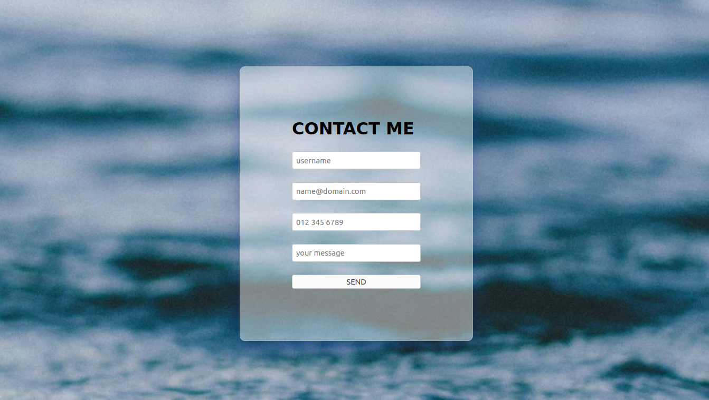
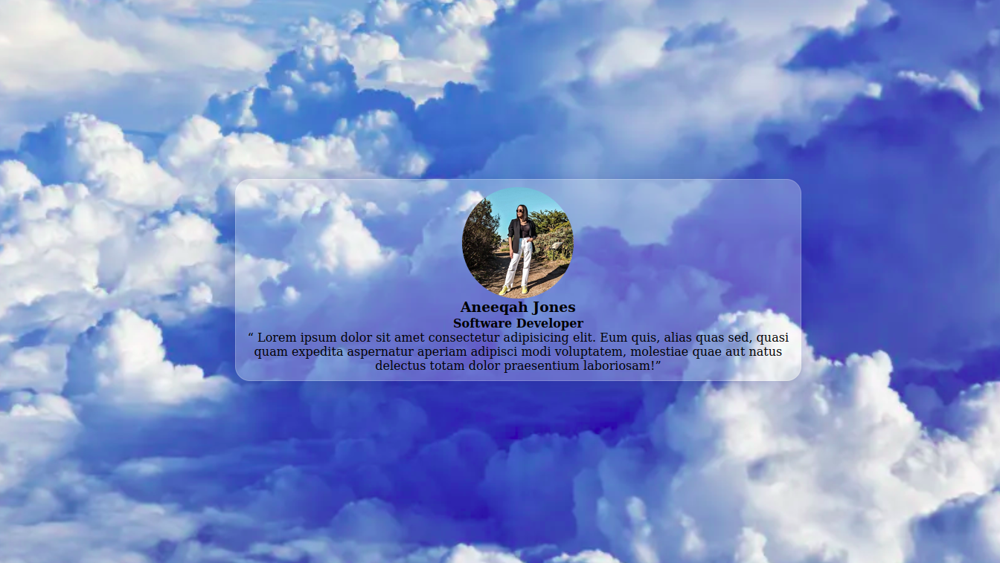

Hi, I'm Byron Lee Tinker.
I'm a hardworking student who always works to the best of my ability.
I tend to struggle to learn new concepts initially but once I'm
comfortable with the topics, I'm able to ace whatever test is thrown
my way. I’m a good communicator and team player and will persist to
help my team achieve what ever goal is set for them.
.JPG)
My passion for coding started because I was always the family tech
guy, who would help when someone needed assistance with their
cellphones or the television and with that my passion for technology
grew and I was able to gain confidence from it.
Dancing and listening to music. Any kind of sport but
particularly enjoy swimming. Listening to podcast especially murder
mysteries and conspiracy theories. Outdoor activities in particular
hiking and traveling in the wilderness as nature is one of my many
passions. Petting and caring for animals.
Work and Education
Soft Skills Teamwork
Good communication Flexibility Hardworking Persistent Caring and KindEducational Background
Grade 12: Bachelor's passMy Skills
Microsoft Office Microsoft Word Microsoft Exel Microsoft PowerpointMy Projects

Contact Form
HTML/CSS
My Contact form.
Timeline
HTML/CSS
My Timeline.

Testimonial slider
HTML/CSS
My Testimonials.
Testimonials

Thapelo Tsotetsi
Back-end Developer / Lecturer
Byron-lee has a great personality. He’s communication skills are noteworthy and he always know when to ask question. He has an amazing skill of being able to learn new technologies very quickly. He will make a great addition to your team as a Junior Full-stack Developer.

Jason Wandrag
Front-end Developer / Lecturer
Byron-Lee has a positive and vibrant attitude. He shows a lot of commitment and works daily towards improving himself.

Aneeqah Jones
Software Developer
Byron is a smart individual who pushes himself every day to be the best that he can be. He goes the extra mile to ensure that his projects are up to his standards.

Adam Africa
Software Developer
Byron is a very enthusiastic and energetic young man. He is highly motivated and never gives up on himself and others.
Ronald Teblanche
Software Developer
Byron is stylish, fun, and kind guy who brings a positive energy to the space he inhabits. He is diligent in his work and is never scared to ask questions in order to progress. He will not only do well as a developer, but also thrive in any workspace.